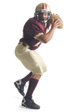

Football Injury Prevention
Football is the leading cause of school sports injuries. According to the U.S. Consumer Product Safety Commission, in 2007, more than 920,000 young people 18 and under were treated for football-related injuries in hospital emergency rooms, doctors' offices, and clinics.
Protective equipment is one of the most important factors in reducing the risk of injury in football. According to Pop Warner Football, Official Rule Book, players should have the following protective gear:

- Helmet
- Shoulder pads, hip pads, tail pads, knee pads
- Pants (one piece or shell)
- Thigh guards
- Jersey
- Mouth guard (A keeper strap is required.)
- Athletic supporter
- Shoes (In some leagues, players can wear sneakers or non-detachable, rubber cleated shoes. Detachable cleats of a soft-composition also are allowed in some leagues. Check with your coach about the type of shoe allowed in your league.)
- If eyeglasses must be worn by a player, they should be of approved construction with non-shattering glass (safety glass). Contact lenses also can be worn.
The American Academy of Orthopaedic Surgeons offers the following strategies for parents and coaches to help young athletes prevent back-to-school sports injuries:
- Require each child to have a pre-season physical to determine their readiness to play and uncover any condition that may limit participation.
- Have your child always warm up and stretch before and after participating in a sport, particularly when the weather is cold. Athletes should warm up with some light exercise for at least 3 to 5 minutes, then slowly and gently stretch the muscles to be exercised, holding each stretch for at least 30 seconds.
- It is important for your child to stay active during the summer, so that he or she is prepared to begin participating in fall sports.
- During practices, have children take frequent water breaks to prevent dehydration and overheating.
- Learn to recognize early signs of pain and discomfort in children, and teach children to be aware of those signs as well. Let them know they should notify their coach or parent as soon as they experience any pain.
- If an injury occurs, a physician should approve the child's return to play.
Photo copyright ©2010, Getty Images.
for additional info on Football
Last reviewed: April 2010
Copyright 2010 American Academy of Orthopaedic Surgeons